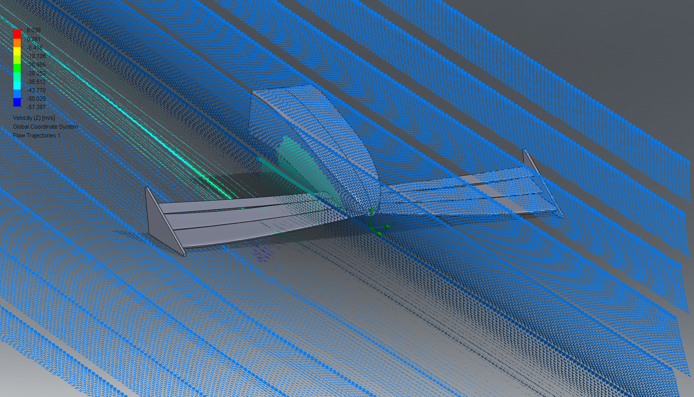
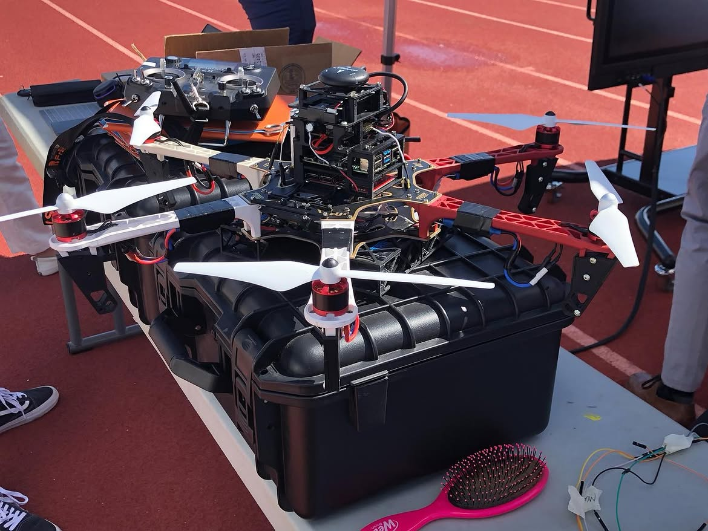
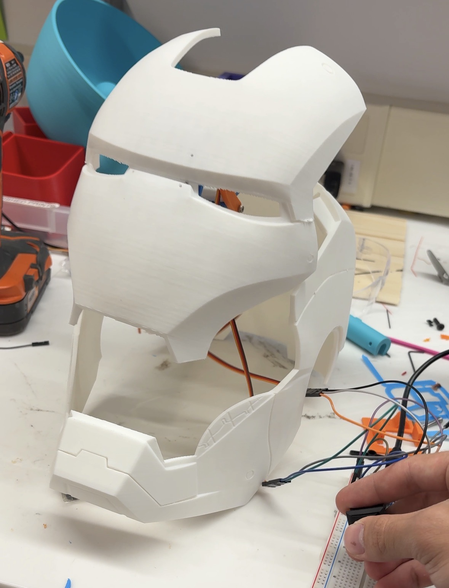

B.S. Mechanical Engineering, Aerospace Minor — Cornell University, Expected May 2028
I've been making things for as long as I can remember, from homemade fishing lures and Star Wars helmets to model rockets and remote-controlled airplanes. Watching F-16s take off with my grandfather left me wanting to design aircraft of my own, and that ambition still drives me. I love figuring out how things work and turning my own ideas into working hardware: an enclosure now fielding to multiple defense systems, UAVs I've built and flown, and a wing I designed from scratch and tested in CFD.
Full project write-ups, CAD files, and build photos/videos available at the site linked above.
Led a clean-sheet redesign of the motorized enclosure that protects fielded defense equipment: a split-lid design on a bolt-together, weld-free frame built from repeated parts, more than 40% lighter than the legacy unit. Ran SolidWorks Motion, CFD (80 mph wind), and FEA, and produced the CAD and drawings for manufacturing. Design complete and fielding to multiple systems.

Self-initiated a deep dive into SolidWorks Premium's Flow Simulation tool, designing a multi-element F1-style front wing from scratch with no class or team behind it. Ran an external flow analysis at 100 mph and measured 347.5 N (≈78 lbf) of downforce by integrating pressure loads across the wing.

Built and flew UAVs hands-on, not just designed them: as a Northfield High School (Denver, CO) student, worked in tandem with Lockheed Martin engineers to build a LIDAR-mapping hexacopter, running onboard Raspberry Pi/LIDAR mapping software myself. Then designed, wired, and flight-tested a scratch-built fixed-wing autopilot aircraft through several prototypes until it flew clean.
Designed, built, and demoed a wearable sleep-stage-detection device in a single 24-hour hackathon, using heart rate and skin temperature sensing to wake the user at the end of a REM cycle. Built with teammates Sani Mohottige and Liam Alcalay.

Built a functional articulating Iron Man helmet — servo motors coordinated by an Arduino, running on a custom rechargeable battery pack built from reclaimed 18650 cells. Followed a guided Sesame robot build first to learn the basics of servos and circuits.
Designed and built the motor-driven vibration linkage for a filtration tray that separates spotted lanternfly contamination from grape juice during harvest, sourcing components from McMaster-Carr. Built with Flynn Basehart, Kathryn Moskal, Emma Harshberger, and Gavin Sneyd.
SolidWorks (CAD, assemblies, drawings, surfacing), SolidWorks Motion, Simulation (FEA) & Flow (CFD), Fusion 360
CNC mill & lathe (Red Apron certified), sheet metal, soldering, composite surface work, laser cutting, hand & power tools
Bambu Lab, Elegoo, Anycubic — daily-driver FDM and resin printers
BLDC, brushed DC, servo & stepper integration; ESCs; custom gearboxes; sensors; harness fabrication
Arduino, Raspberry Pi, STM32, Teensy, ESP32; Python; Bluetooth data integration; multimeter & oscilloscope
Company PDM, tolerancing & dimensioning, material selection, assembly documentation